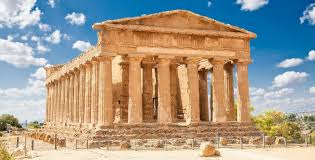

El periodo clásico abarca desde el siglo V al siglo IV a.C. en Grecia, y desde el siglo I a.C. al siglo V d.C. en Roma. Durante este tiempo, ambas civilizaciones alcanzaron un alto grado de refinamiento en las artes, dejando un legado artístico que ha sido admirado y estudiado a lo largo de los siglos.
fue un movimiento literario anticlásico que se inició en el siglo XVIII (ca. 1770) en Alemania, Inglaterra y Francia, tomando al principio la forma de Prerromanticismo, y se dispersó y cultivó por toda Europa hasta mediados del siglo XIX.